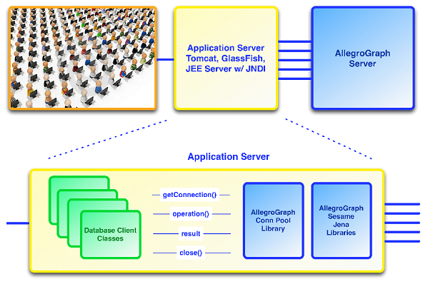

Overview
According to Wikipedia, "a connection pool is a cache of database connections maintained so that the connections can be reused when future requests to the database are required. Connection pools are used to enhance the performance of executing commands on a database. Opening and maintaining a database connection for each user, especially requests made to a dynamic database-driven website application, is costly and wastes resources. In connection pooling, after a connection is created, it is placed in the pool and it is used over again so that a new connection does not have to be established."
The AllegroGraph java client connection pool provides out of the box pooling functionality for AGRepositoryConnection objects. The connection pool functionality is configurable through parameterized initialization values to suit the requirements of client applications. The implementation shields client code from pool lifecycle operations like borrowing and returning operations and provides the same RDF4J interface as in a non-pooled implementation.
Client Interactions

Java client retrieves connection using call
getConnection()on the connection pool backed Repository. Note: (i) When a connection is available in the pool it is borrowed from the pool (transparently to the client); (ii) the borrowed connection is unavailable to other clients until returned to the pool; (iii) the call to get a connection blocks until a connection is available (or throws an exception if configured timeout occurs)Java client performs desired operations on the connection and then calls
close()at the end of the operations.The connection is returned to the pool and made available to the next client.
Parameters
The connection pool accepts a number of configuration parameters (defined in com.franz.agraph.pool.AGPoolProp) that provide control over the pool's runtime behavior:
initialSize- The initial number of idle connections that are created when the pool is started (default is 3). Choose a value which will ensure that the pool always starts with a desired number of 'ready' connections. This will limit the time which first client requests will have to wait to obtain (in this case create) connections.
maxActive- Default is 8. The maximum number of active connections that can be borrowed from this pool at the same time, or negative for no limit. This setting will mostly depend on the available server and client resources. For environments with limited resources consider lowering the number of active and idle connections to preserve the memory and limit swap file usage. If multiple clients (or different pools) are using the same AllegroGraph Server, this value should be set to something less than the size of the range specified by AllegroGraph server parameter SessionPorts, if that is specified (see Server Configuration for information on that AllegroGraph configuration parameter).
maxIdle- Default is 8. The maximum number of connections that can remain idle in the pool, without extra ones being released, or negative for no limit. Like with maxActive, consider lowering for environments with limited resources.
minIdle- Default is 0. The minimum number of connections that can remain idle in the pool, without extra ones being created, or zero to create none.
maxWait- Default is -1, which means indefinitely. This parameter specifies the maximum number of milliseconds that the pool will wait (when there are no available connections) for a connection to be returned before throwing an exception (NoSuchElementException). The value can be -1, which, as said, means wait indefinitely. Note that if set to -1 and the connection does not become available to the calling client, the code may deadlock and not progress without proper handling.
shutdownHook- Default is FALSE. When the pool is created, if this is true (default is false), a hook will be registered to close the pool. Connections will be closed whether idle or not. When the pool is closed from outside of the hook, the hook will be removed so it is not leaked in the list of hooks. Set to 'TRUE' if your environment has a 'global' shutdown routine, as in most web application environments.
testOnBorrow- Default is TRUE. The indication of whether connections will be tested before being borrowed from the pool. If the connection fails the test, it will be dropped from the pool, and we will attempt to borrow another. See below for information on setting this value.
testOnReturn- Default is FALSE. The indication of whether connections will be validated before being returned to the pool. Consider changing the value to 'TRUE' if you notice that connections returned from the pool are not usable. This may be happening due to the connections timing out.
testWhileIdle- Default is FALSE. Indicates whether or not idle connections should be validated. Connections that fail to validate will be dropped from the pool. This setting has no effect unless timeBetweenEvictionRunsMill is > 0.
timeBetweenEvictionRunsMillis- Default is -1. The number of milliseconds to sleep between runs of the idle connection evictor thread. When non-positive, no idle connection evictor thread will be run.
The following parameters are ignored if timeBetweenEvictionRunsMillis is non-positive (so no idle evictor thread is run):
minEvictableIdleTimeMillis- Default is 1800000 (30 minutes in milliseconds). The minimum amount of time in milliseconds a connection may sit idle in the pool before it is eligible for eviction by the idle connection evictor (if any). If you set
minIdle to a positive number, consider setting this value to -1 (disabled) and specifying a positive value forsoftMinEvictableIdleTimeMillis`. softMinEvictableIdleTimeMillis- Default is -1 (disabled). Specifies the minimum amount of time a connection may sit idle in the pool before it is eligible for eviction by the idle connection evictor (if any), with the extra condition that at least
minIdleconnection instances remain in the pool. When non-positive, no connections will be evicted from the pool due to idle time alone. This setting has no effect unlesstimeBetweenEvictionRunsMillis> 0 and it is superseded byminEvictableIdleTimeMillis(that is, ifminEvictableIdleTimeMillisis positive, thensoftMinEvictableIdleTimeMillisis ignored). Consider setting this to a positive value (and settingminEvictableIdleTimeMillisto -1) if you setminIdleto a positive value (otherwise connections may be destroyed because they are idle because ofminEvictableIdleTimeMillisand new ones will have to be created immediately because ofminIdle). numTestsPerEvictionRun- Default is 3. The number of connections to examine during each run of the idle connection evictor thread (if any). See below for information on setting this value.
Validation parameters
Connections in the pool may become invalid due to timeouts, connection errors, or other reasons. A connection can be invalid when borrowed or can become invalid while being used. Processes using a connection should be prepared to handle invalid connections by discarding the invalid connection and requesting a new connection.
The connection pool can also itself check connections, either when fulfilling a request (testOnBorrow) and/or periodically in the background (numTestsPerEvictionRun). Checking connections itself takes time and a balance must be struck between the cost of checking idle connections and the cost of a process borrowing an invalid connection and having to request a new one, which might have to be established.
The numTestsPerEvictionRun parameter controls the amount of verification work performed by the eviction thread in each iteration (run). The goal is to balance the performance against connection availability. Other aspects of pooling which should be considered at the same time are: connection timeout value, error handling capabilities, max idle, and connection availability.
You should consider the following when choosing a value for this parameter:
Connection verification takes time and a high number may result in performance degradation.
In cases where the pool maintains a minimum number of connections (when minIdle is greater than 0): evictions that result in new connections being created to maintain the minimum require time for these to be established. If this is happening, it is important to trace the root cause of these evictions and in particular, the timeout value should be reviewed. Incorrectly set values may cause performance degradation due to work needed to establish new connections to fill the pool.
A higher number means borrowed connections are more likely to be valid. A high number is more consistent with a false value for testOnBorrow and a low number with a true value.
If you find a high number is required for this parameter (meaning that connections often become invalid and must be cleared out), consider what the causes might be, such as whether connection reliability is an issue or timeouts are too short.
The testOnBorrow parameter specifies whether a connection should be validated before being borrowed. Among the things that should be balanced when setting this parameter are: likelihood connections in the pool have become invalid; cost of verifying before assigning (that is cost of the test enabled by this parameter); and the cost of re-establishing failed connections borrowed by the requesting process.
Creating a connection pool
Using the Sesame/RDF4J interface
- Establish variables:
String serverUrl = "http://agraph.example.net:10035"; String AG_USER = "user"; String AG_PASSWORD = "password"; String CATALOG = "my-catalog"; String REPO = "test-repo"; - Create an AGConnPool object, specifying the pool properties: max active, max idle, time to wait:
- Create connection pool backed AGRepository
- Obtain and close connections (same as in a non-pooled environment)
- Close resources. Note: closing the repository shuts down the connection pool and closes all pooled connections whether or not they have been returned (via
connection.close()orpool.returnObject(connection))
AGConnPool pool = AGConnPool.create(
// Connnection properties
AGConnProp.serverUrl, serverUrl,
AGConnProp.username, AG_USER,
AGConnProp.password, AG_PASSWORD,
AGConnProp.catalog, CATALOG,
AGConnProp.repository, REPO,
AGConnProp.session, SESSION_TYPE, // e.g. Session.TX
AGConnProp.sessionLifetime, SESSION_LIFETIME,
// Connection pool properties
AGPoolProp.shutdownHook, false,
AGPoolProp.testOnBorrow, true,
AGPoolProp.maxActive, POOL_MAX_ACTIVE_CONNECTIONS,
AGPoolProp.maxIdle, POOL_MAX_IDLE_CONNECTIONS,
AGPoolProp.maxWait, POOL_MAX_TIME_TO_WAIT_FOR_CONNECTION
);
/*
Note that SESSION_TYPE, SESSION_LIFETIME, POOL_MAX_ACTIVE_CONNECTIONS,
POOL_MAX_IDLE_CONNECTIONS, and POOL_MAX_TIME_TO_WAIT_FOR_CONNECTION
are placeholders which you should replace with your desired settings.
*/ a. Create new instance of the AGServer and obtain reference to AGCatalog
AGServer server = new AGServer(serverUrl, AG_USER, AG_PASSWORD);
AGCatalog catalog = new AGCatalog(server, CATALOG); b. Obtain instance of AGRepository and set repository to use connection pool
AGRepository repository = catalog.openRepository(REPO);
repository.setConnPool(pool); AGRepositoryConnection connection = repository.getConnection();
... perform operations on connection repository.close(); Multi-threaded environments
- Create an instance of AGRepository and AGConnPool (same as in non-multi-threaded code above (see #1 thru #3). This object will be shared among the executing threads
AGRepository repository = catalog.createRepository("my repository id"); repository.setConnPool(createConnectionPool()); - Create worker threads that will perform the operations on the connection. In this example, using the java's ExecutorService (see http://docs.oracle.com/javase/6/docs/api/java/util/concurrent/ExecutorService.html to provide the thread pool management
- Create mechanism to wait or interrupt the executing threads to finalize execution.
ExecutorService execService = Executors.newCachedThreadPool(); a. Pass reference to the shared AGRepository object to each worker thread.
b. Obtain connection from the AGRepository object in each executing worker (in this example an instance of Runnable). Note: the call to getConnection() (borrowing connection from pool) will block until a connection is available.
for (int i = 0; i < numberOfThreads; i++) {
execService.execute(new Runnable() {
@Override
public void run() {
try {
AGRepositoryConnection conn = repository.getConnection();
//.. perform opeations on connection
conn.close();
} catch (RepositoryException e) {
e.printStackTrace();
}
}
});
} c. Call close() on connection object to return the connection back to the pool.
a. In this example the ExecutorService is shutdown and the process waits up to 5 minutes for all processes to finish execution.
execService.shutdown();
execService.awaitTermination(5, TimeUnit.MINUTES);
Notes for versions prior to 4.11
- Create AGConnPool object
- Get, use and close connections
AGConnPool pool = AGConnPool.create(
AGConnProp.serverUrl, "my server url",
AGConnProp.username, "user name",
AGConnProp.password, "password",
AGConnProp.catalog, "my catalog id",
AGConnProp.repository, "my repository id",
AGConnProp.session, SESSION_TYPE,
AGConnProp.sessionLifetime, SESSION_LIFETIME,
AGPoolProp.shutdownHook, false,
AGPoolProp.testOnBorrow, true,
AGPoolProp.maxActive, POOL_MAX_ACTIVE_CONNECTIONS,
AGPoolProp.maxIdle, POOL_MAX_IDLE_CONNECTIONS,
AGPoolProp.maxWait, POOL_MAX_TIME_TO_WAIT_FOR_CONNECTION
); AGRepositoryConnection connection = pool.borrowConnection();
... perform operations on connection
connection.close(); Connection tuning
These parameters are likely candidates for values other than the default, as discussed in Connection pool parameters above:
testOnReturninitialSizemaxActivemaxIdlemaxWaitshutdownHook